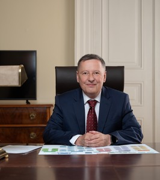

ZAKLADNI INFORMACE
Ministr školství, mládeže a tělovýchovy

Prof. JUDr. Vladimír Balaš, CSc.
ministr školství, mládeže a tělovýchovy (od 1. července 2022)
* 20. dubna 1959 v Prostějově
Vystudoval Právnickou fakultu Univerzity Karlovy. Během studií
a praxe absolvoval řadu mezinárodních vzdělávacích kurzů
a byl držitelem prestižních stipendií zahraničních univerzit.
Během své odborné praxe zastával řídící funkce v rámci mnoha
významných vědeckých institucí. Byl ředitelem Ústavu státu a
práva ČSAV a AV ČR, člen Vědecké rady Ministerstva zahraničních
věcí nebo předseda České společnosti pro mezinárodní právo.
Působil rovněž jako člen Stálého arbitrážního soudu v Haagu a
dále byl zástupcem České republiky v rámci organizací OSN.
Věnuje se pedagogické činnosti na českých i zahraničních
vysokých školách. Je spoluautorem několika významných publikací
týkajících se mezinárodního práva. V letech 1994-1998 byl
zastupitelem města Plzeň. V roce 2021 byl zvolen poslancem
Parlamentu ČR.
Ministr školství, mládeže a tělovýchovy
Vystudoval Právnickou fakultu Univerzity Karlovy. Během studií a praxe absolvoval řadu mezinárodních vzdělávacích kurzů a byl držitelem prestižních stipendií zahraničních univerzit. Během své odborné praxe zastával řídící funkce v rámci mnoha významných vědeckých institucí. Byl ředitelem Ústavu státu a práva ČSAV a AV ČR, člen Vědecké rady Ministerstva zahraničních věcí nebo předseda České společnosti pro mezinárodní právo. Působil rovněž jako člen Stálého arbitrážního soudu v Haagu a dále byl zástupcem České republiky v rámci organizací OSN. Věnuje se pedagogické činnosti na českých i zahraničních vysokých školách. Je spoluautorem několika významných publikací týkajících se mezinárodního práva. V letech 1994-1998 byl zastupitelem města Plzeň. V roce 2021 byl zvolen poslancem Parlamentu ČR
Ministr školství, mládeže a tělovýchovy
Vystudoval Právnickou fakultu Univerzity Karlovy. Během studií a praxe absolvoval řadu mezinárodních vzdělávacích kurzů a byl držitelem prestižních stipendií zahraničních univerzit. Během své odborné praxe zastával řídící funkce v rámci mnoha významných vědeckých institucí. Byl ředitelem Ústavu státu a práva ČSAV a AV ČR, člen Vědecké rady Ministerstva zahraničních věcí nebo předseda České společnosti pro mezinárodní právo. Působil rovněž jako člen Stálého arbitrážního soudu v Haagu a dále byl zástupcem České republiky v rámci organizací OSN. Věnuje se pedagogické činnosti na českých i zahraničních vysokých školách. Je spoluautorem několika významných publikací týkajících se mezinárodního práva. V letech 1994-1998 byl zastupitelem města Plzeň. V roce 2021 byl zvolen poslancem Parlamentu ČR
Ministr školství, mládeže a tělovýchovy
Vystudoval Právnickou fakultu Univerzity Karlovy. Během studií a praxe absolvoval řadu mezinárodních vzdělávacích kurzů a byl držitelem prestižních stipendií zahraničních univerzit. Během své odborné praxe zastával řídící funkce v rámci mnoha významných vědeckých institucí. Byl ředitelem Ústavu státu a práva ČSAV a AV ČR, člen Vědecké rady Ministerstva zahraničních věcí nebo předseda České společnosti pro mezinárodní právo. Působil rovněž jako člen Stálého arbitrážního soudu v Haagu a dále byl zástupcem České republiky v rámci organizací OSN. Věnuje se pedagogické činnosti na českých i zahraničních vysokých školách. Je spoluautorem několika významných publikací týkajících se mezinárodního práva. V letech 1994-1998 byl zastupitelem města Plzeň. V roce 2021 byl zvolen poslancem Parlamentu ČR